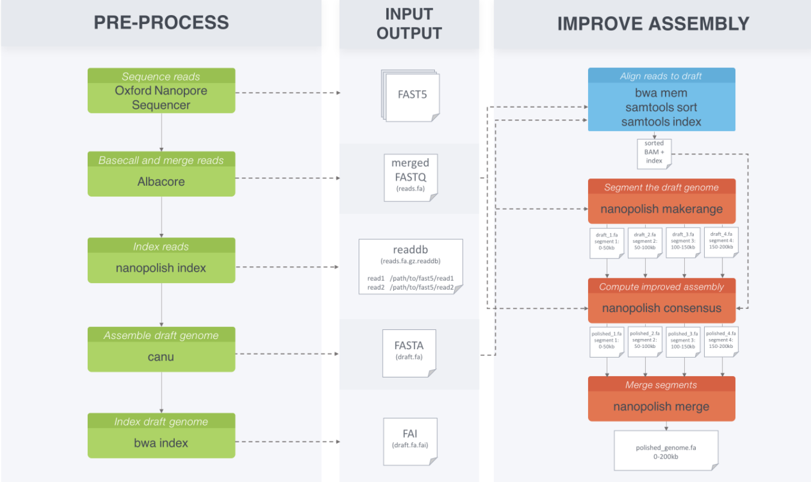

Nanopolish
https://github.com/jts/nanopolish
Author: Jared Simpson
Software tool for using signal-level nanopore data to:
Improve a consensus sequence
Call variants
Detect methylated bases
Modelling events
The probability of observing an event $e_i$ given that the 5-mer $k$ is the true sequence is
$$P(e_i|k, \Theta)=P(e_i|k, \mu_k, \sigma_k)=\mathcal{N}(\mu_k, \sigma_k^2)$$Modelling events
In order to model a sequence $S$ we represent it as a sequence of 5-mers $S=(s_1, s_2,…,s_m)$.
In a perfect world there would be a one-to-one mapping of events $e$ to 5-mers $s$. In this utopia
the probability of the data could be calculated as
Modelling events - example
In reality though there are two other situations which can arise.
Skip event - 5-mer has passed through the pore without being detected
Split event - 5-mer has emitted multiple events.
Modelling events - example
$S=(ACGTA,CGTAA,GTAAC,TAACT)$
Starting at $ACGTA$ we can either go to the next 5-mer, $CGTAA$, skip to $GTAAC$,
or split the event and stay where we are - emitting another event.
Modelling events - Enter the HMM
We can then calculate the probability of the data given $S$ by summing over all the possible paths with the Forward algorithm
HMM Profile
$E$ states are split events.
$K$ states are skip events.
$M$ states are normal movement to next k-mer.
HMM Profile - Transition Probabilities
\[\begin{align*} &t(M_{s_{i-1}}\rightarrow K_{s_i})=f(|\mu_{s_{i-1}}-\mu_{s_i}|) \\ &t(M_{s_{i-1}}\rightarrow E_{s_{i-1}})=p_{me}(1-t(M_{s_{i-1}}\rightarrow K_{s_i})) \\ &tM_{s_{i-1}}\rightarrow M_{s_i})=1-t(M_{s_{i-1}}\rightarrow K_{s_i})-t(M_{s_{i-1}}\rightarrow E_{s_{i-1}}) \\ &t(E_{s_{i-1}}\rightarrow E_{s_{i-1}})=p_{ee} \\ &t(E_{s_{i-1}}\rightarrow M_{s_i})=1-t(E_{s_{i-1}}\rightarrow E_{s_{i-1}}) \\ &t(K_{s_{i-1}}\rightarrow K_{s_i})=f(|\mu_{s_{i-1}}-\mu_{s_i}|) \\ &t(K_{s_{i-1}}\rightarrow M_{s_i})=1-t(K_{s_{i-1}}\rightarrow K_{s_i}) \\ \end{align*} \]
HMM Profile - Transition Probabilities
\[\begin{align*} &P(e_i|\pi_k=(i,M_{s_j}))=\mathcal{N}(\mu_{s_j},\sigma^2_{s_j}) \\ &P(e_i|\pi_k=(i,E_{s_j}))=\mathcal{N}(\mu_{s_j},(v\sigma_{s_j})^2) \end{align*} \]
Computing improved consensus sequence

Section 2.2 - Finding all matches within $X$ longer than a minimum length $L$
This is implemented in Algorithm 3
and runs in $O[max(NM, matches)]$
Can be done in the same sweep to calculate $a$ and $d$
Section 2.3 - Finding all set-maximal matches within $X$ in linear time
Given previous methods, for any sequence $y_i$ at position $k$, it's set-maximal match must be immediately prior or following.
Section 2.3 - Finding all set-maximal matches within $X$ in linear time
Find your interval of longest matches at $k$ - Algorithm 3
If $y_j[k] \neq y_i[k]$ then this is set-maximal.
Otherwise, the match can be extended and is therefore not set-maximal.
Runs in $O(NM)$ - Algorithm 4
Section 2.4 - Finding all set-maximal matches from a new sequence $z$ to $X$
Implemented in Algorithm 5 is a way to determine the set-maximal matches of a new sequence(s).
This can be done in $O(N)$
I can't quite follow how the algorithm works.
Section 2.5 - Compact representation of $X$
Storing $a_k$ and $d_k$ for all $k$ would use more space than the original binary data.
Not needed all the time, but are needed if wanting to analyse a new sequence.
Section 2.5 - Compact representation of $X$
Because there is long stretches of identical values in the sequences the PBWT should be storable in smaller-than-original space.
Could be even more space-efficient by storing only a subset of the $a$ and $d$ arrays, say every 32 or 64 positions.
Makes mention of scope for improving storage of $d$ using Huffman coding.
Results
 Non-linear benefit for compression as $M$ increases.
Non-linear benefit for compression as $M$ increases.
Results
 Clearly demonstrates the linear time to find
set-maximal matches.
Clearly demonstrates the linear time to find
set-maximal matches.
Results
 Indexed takes constant time up until the point where
it runs out of memory.
Indexed takes constant time up until the point where
it runs out of memory.
Points to Ponder
“Although the algorithms are presented for binary data, they can be extended to multi-allelic data with a little care.”
Points to Ponder
All algorithms require exact matching.
Could use as a seeding method for statistical
genotype algorithms.
Mentions possible speedup to BEAGLE
Points to Ponder
More direct approach would be to work from both ends of the sequences.
At some point $k$ we have information about matches in both directions.
Can then assign alleles for all sequences at $k$ before moving to next $k$
Conclusion
Series of algorithms to generate prefix array data structures for haplotype sequences and for strong compression.
Removes factor of $M$ for search time of new sequences. Allowing matches for ten's of thousands of sequences in minutes.
Conclusion
Importantly, this could provide a
way of storing linkage information for a genome graph.
As this can be challenging due to memory limitations.